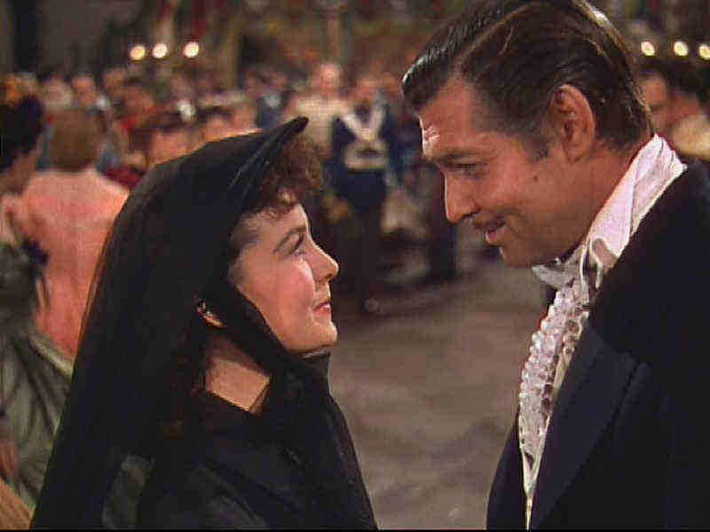

MGM/1939/233m/FS 1.33
I suppose just about everybody knows that Gone with the Wind is a great, big melodrama about the South during the Civil War. It’s also a timeless screen romance, a weeper of the first order. The sheer length of the movie might present an obstacle to many viewers, but it’s worth the investment in time. Gone with the Wind, while in some ways quite dated, is fascinating to watch on several fronts. But foremost, it’s Scarlett and Rhett.
 |
Rhett woos Scarlett. ©MGM |
Scarlett represents the fantasy
of the Southern society. She’s startlingly beautiful and perfectly pampered. When war
breaks out, Scarlett survives, somehow, just as the South must somehow survive. Rhett is
reality. The harshest dose of Rhettorisms comes at the "brandy and cigars"
meeting at Twelve Oaks when Rhett is asked his opinion of the Southern readiness for War.
It’s succinct, abrupt, and brutally honest. Two great characters: Scarlett and Rhett
are simple yet complex. Two great performances: Leigh and Gable display astounding screen
chemistry in one of the most magnificent productions ever mounted.
Along with Vivien Leigh and Clark Gable, Olivia de Havilland
makes Melanie’s cloying sweetness palatable, and while Leslie Howard is rather fey in
the role of Ashley Wilkes, it’s in keeping with the character. My God, what did
Scarlett ever see in Ashley. You can see Rhett pondering that question every time
Ashley’s name comes up. Thomas Mitchell gets to play drunk twice in 1939, as
Scarlett’s father in Gone with the Wind and again in Mr. Smith Goes to
Washington. Mitchell must have been hiding a bottle under his frock coat. Superman
fans can savor the late George Reeves in a small role.
Production Design by movie legend William Cameron Menzies is
astounding. The sheer level of detail, the majestic use of color, the spectacular nature
of the sets, is a tribute to the art of the production designer. One of the pleasures of
the DVD is the level of detail that is more evident than ever on home video. And then
there’s the classic notes of Tara’s Theme by Max Steiner. The
three-strip Technicolor photography leaves nothing to be desired.
Though directed by Victor Fleming with the flair of a good field
commander(Some scenes were directed by George Cukor.), Gone with the Wind is a
classic example of a producer’s movie. David O. Selznick was involved in virtually
every decision on the film. It’s almost as if he slipped into the skins of every
major player in making the movie, merging his vision with theirs and bringing forth a
better vision. Gone with the Wind swept the Academy Awards in 1939(See 1939 Vintage)including Best Picture, a year that
arguably produced the finest batch of films made in any single year in the history of
movies.
The elements used for Gone with the
Wind don’t constitute a full-blown restoration in my view. The DVD suffers from
extensive color registration errors. When 3 strip shows were originally produced, there
was a known positioning related to each Technicolor camera. Dependent upon a shot by shot
analysis, the lab would build the corrections (which were known in advance) into the
production of the matrices. This took care of the lion's share of the problem. Apparently,
this was not done for the Interpositive used for this transfer. Too bad Gone with the
Wind did not get all the attention it needed and deserves. It is one of the defining
Hollywood epics. Did the producer’s of this newly struck Gone with the Wind lack
dedication or were they ignorant of the process details involved in striking a new IP from
original Technicolor elements? Either way, we have to live with the resulting problems. A
new Technicolor IP for Gone with the Wind is a must.
When it’s not suffering from mis-registration, the colors
are a visual feast. Images are usually sharp, though there were problems handling detail
in the Twelve Oaks approach scene. I also noted what appeared like compression artifacts
as active grain appeared on the white collars against black frock coats.. The sound is a
source of frustration only in the fact that it recorded at significantly less than
reference levels. Note the brazen difference in sound output between the menu music or the
logo introduction and the film. At least it is consistent, so you only have to raise the
volume once. The DVD is presented in a remixed Dolby Digital 5:1 sourround sound and the
original mono mix as well. The added surround information adds some punch to the cannons,
but otherwise it's quite similar, with very little ambiance added. On the issue of making Gone
with the Wind a "flipper," it is an almost four hour movie and having to
get up to turn the DVD at the Intermission title card is not an inconvenience.